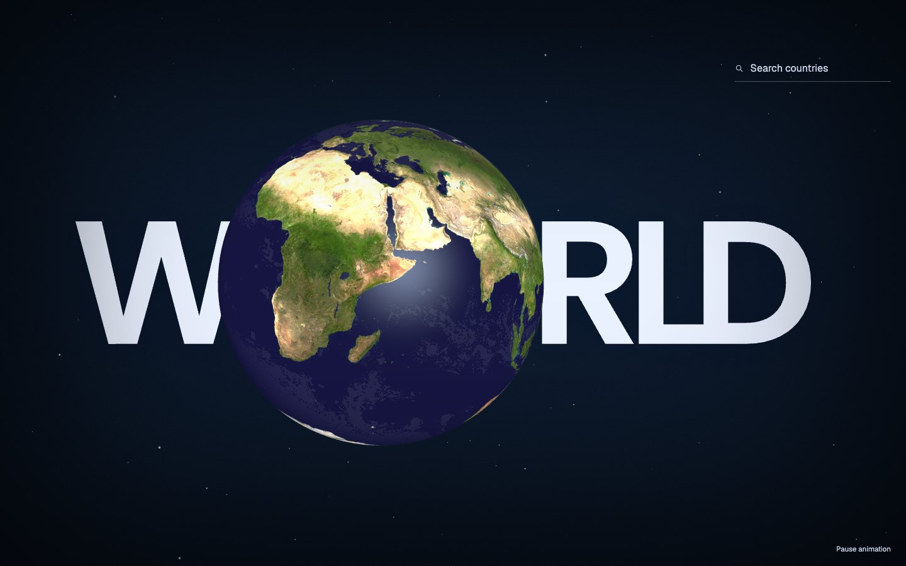
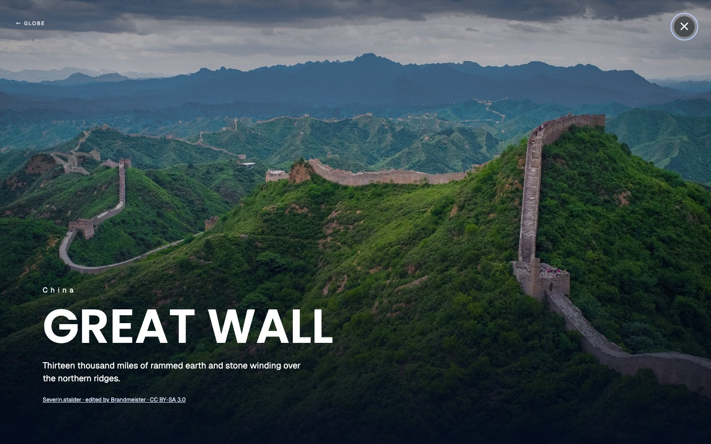
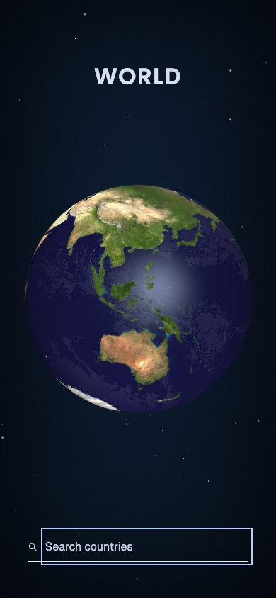
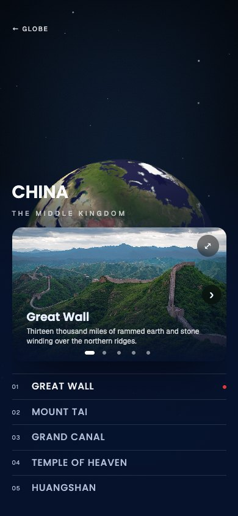

Create a blank page without header and footer. Name it "atlas" and implement it according to instructions in atlas.md
Atlas is a standalone full-viewport Earth explorer. The globe fills the O in WORLD, responds to pointer and wheel input, and shifts aside for country highlights and full-bleed landmark photos.
atlas.md (42,010 bytes) provided the layout, interactions,
timing, shaders, and asset references.
Vite builds src/pages/atlas.njk into atlas.html.
mountAnimation(container, options) wires the UI and exposes
play, pause and destroy.
CONFIG contains the scene and motion settings.
Three.js renders the lit Earth, drifting clouds and a separate fixed starfield. The CPU ray and the fragment shader sample the same 4096×2048 country raster. A single render loop advances ambient motion and stops offscreen, in hidden tabs, when paused or under reduced motion. A container observer updates the camera and canvas size.
GSAP scales the Earth in over 1.8 seconds, rotates and shifts it when a country opens over 1.3 seconds, and returns it over 0.95 seconds. CSS animates the interface. The desktop panel becomes a scrollable mobile sheet below 720 pixels. Search, the panel controls and the photo dialog are keyboard accessible.
ray.setFromCamera(ndc, camera);
inverse.copy(earth.matrixWorld).invert();
localRay.copy(ray.ray).applyMatrix4(inverse);
if (!localRay.intersectSphere(unitSphere, local)) return null;float sid = texture2D(uIdMap, vUv).r * 255.0;
float sel = step(0.5, uSelectId) *
(1.0 - step(0.5, abs(sid - uSelectId)));flight.to(spin.rotation, { y: yaw }, 0);
flight.to(tilt.rotation, { x: pitch }, 0);
glide = gsap.to(world.position, { x, duration, ease: "power2.inOut" });if (animated()) frame = requestAnimationFrame(tick);
else render();npm ci
npm run build
python3 -m http.server 8080
Open http://localhost:8080/atlas.html. Edit
initialYaw, autoSpin, sun,
flySeconds and dpr in
animations/atlas/index.js.
The Vite build and JavaScript syntax checks passed. Chrome verified 1440×900, 768×1024, 390×844 and 375×667; mouse hover, drag and wheel; alias search and Enter; local image decode and full-bleed; Escape and touch; keyboard pause and reduced motion; and canvas removal after explicit destroy. No application console errors were observed. A 1.1-second steady-state desktop sample recorded zero long tasks.



